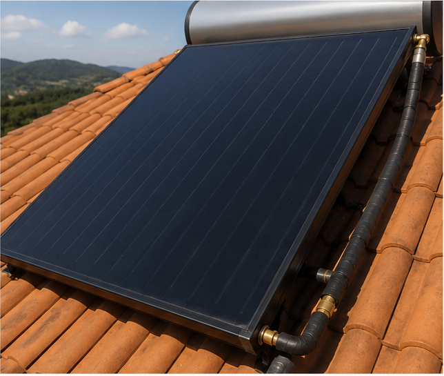
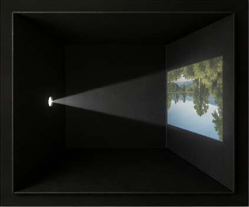
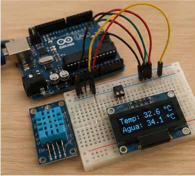

Absorção
A placa coletora é escura de propósito: superfícies escuras absorvem quase todo o espectro visível, convertendo a energia luminosa em energia térmica na água que circula por dentro dela.
Projeto Integrador — Física e Tecnociência · Programação e Robótica
Uma proposta de aquecimento solar térmico automatizado — pensada com física óptica, sensores, atuadores e um site acessível para toda a comunidade escolar entender o projeto.
O problema
Piscinas térmicas escolares costumam depender de aquecimento a gás ou resistência elétrica, com alto consumo energético e custo recorrente. O desafio do nosso Projeto Integrador foi imaginar uma solução conceitual que usasse o próprio Sol como fonte primária de calor, com um sistema de automação capaz de decidir, sozinho, quando aquecer e quando poupar.
Para isso, unimos três frentes de estudo do trimestre: a física da luz (óptica aplicada a coletores solares), a lógica de sensores e atuadores (robótica e programação) e o compromisso de tornar o projeto compreensível e acessível a qualquer pessoa da comunidade escolar.

Física e Tecnociência
Nosso coletor solar não é mágica: é óptica aplicada. Absorção, reflexão e refração explicam por que ele funciona — e por que a escolha de cor e material da placa muda tudo.
A placa coletora é escura de propósito: superfícies escuras absorvem quase todo o espectro visível, convertendo a energia luminosa em energia térmica na água que circula por dentro dela.
Um refletor posicionado atrás da placa direciona raios que escapariam de volta para o coletor, seguindo a lei da reflexão — ângulo de incidência igual ao ângulo de reflexão — para aproveitar mais luz por metro quadrado.
A cobertura de vidro ou policarbonato do coletor deixa a luz entrar, mas dificulta a saída do calor infravermelho — o mesmo princípio óptico usado em estufas, aplicado em escala de piscina.
Quando o disco gira rápido, as sete cores se misturam e o olho enxerga branco — prova de que a luz branca é a soma de todas as cores. Nas placas do nosso coletor vale o caminho inverso: escolhemos superfícies escuras porque uma superfície preta não devolve nenhuma cor, ou seja, não reflete quase nenhuma luz — ela absorve o espectro inteiro e o transforma em calor. Uma placa branca faria o oposto do Disco de Newton em repouso: refletiria as cores e desperdiçaria energia térmica.

Na câmara escura, um orifício controla exatamente por onde a luz entra, formando uma imagem previsível dentro de uma caixa fechada. O coletor solar aplica a mesma ideia de "luz controlada em um espaço fechado": a cobertura transparente deixa a radiação entrar, a caixa isolada evita que o calor escape, e o resultado é um ambiente interno previsivelmente mais quente — luz controlada virando energia térmica, não uma imagem.
Programação e Robótica
O coletor solar resolve a física; sensores e atuadores resolvem a lógica. O fluxograma abaixo mostra o ciclo de decisão que a automação repetiria continuamente.

Uso de tecnologias web
Um modelo simplificado, só para fins didáticos, estima o ganho de temperatura da água a partir da irradiância solar, da área do coletor, do tempo de exposição e da absortância da superfície — o mesmo conceito explicado lá em cima, agora em números.
Aumento estimado de temperatura
—°C
Ajuste os controles e clique em calcular para ver a estimativa.
Modelo educativo simplificado (Q = I · A · α · t, convertido em ΔT pela capacidade térmica da água), sem considerar perdas de calor — usado apenas para ilustrar, de forma proporcional, o efeito da cor da placa e da exposição solar.
Inclusão e impacto social
Acessibilidade não é só sobre o site: é também sobre quem consegue, de fato, chegar até a borda da piscina e entrar na água com segurança e autonomia. Por isso pensamos os dois lados do projeto.
Um elevador de piscina e uma rampa de acesso com corrimãos permitem que pessoas com mobilidade reduzida entrem e saiam da água com autonomia e segurança.
Piso tátil e antiderrapante ao redor de toda a borda, reduzindo o risco de escorregões para todos os frequentadores, com atenção especial a pessoas com baixa visão.
Placas com informações em Braille e alto-relevo indicam profundidade, temperatura da água e rotas de circulação para pessoas com deficiência visual.
Marcações de profundidade em cores contrastantes e números grandes, visíveis tanto dentro quanto fora da água, facilitam a leitura por pessoas com baixa visão.
Vestiários e banheiros com barras de apoio, espaço para cadeira de rodas e bancos de transferência próximos à piscina.
Salva-vidas e monitores treinados em atendimento inclusivo, prontos para apoiar pessoas com deficiência física, sensorial ou intelectual.
Os recursos abaixo estão ativos nesta própria página — teste-os nos botões do cabeçalho.
O botão "Alto contraste" no cabeçalho ativa uma paleta com contraste ampliado entre texto e fundo, acima do mínimo recomendado pela WCAG 2.1 (AA).
O botão "Texto grande" aumenta a escala tipográfica de toda a página sem quebrar o layout, já que as medidas são relativas (rem), não fixas.
Toda imagem informativa do site tem uma descrição textual (atributo alt), lida por leitores de tela para quem não enxerga o conteúdo visual.
Todo botão, link e controle do simulador pode ser alcançado e ativado apenas com o teclado, com indicação visível de foco.
Títulos organizados em ordem lógica (h1 → h2 → h3) e um link de "pular para o conteúdo", que ajudam quem navega com leitor de tela ou teclado a se localizar.
Animações (como o Disco de Newton) são discretas e desativadas automaticamente para quem configura o sistema para reduzir movimento.
Quem fez
Turma 2º ano P.
2º ano P
2º ano P

2º ano P

2º ano P